공인중개사-2차 (2005-10-30 기출문제)
1과목: 임의구분
1. 부동산중개업법령에 의한 중개대상물로 볼 수 없는 것은?
- 동ㆍ호수가 특정되어 분양계약이 체결된 아파트 분양권
- 도로 예정지인 사유지
- 미등기 건물
- 20톤 미만의 선박
- 소유권보존등기를 한 수목의 집단
(정답률: 알수없음)

2. 부동산중개업법령상의 부동산거래정보망에 관한 설명 중 옳은 것은?
- 부동산거래정보망이란 중개업자와 중개의뢰인간에 중개대상물의 중개에 관한 정보를 교환하는 체계를 말한다.
- 정보통신부장관은 부동산거래정보망을 설치ㆍ운영할 자를 지정할 수 있다.
- 거래정보사업자가 운영규정의 변경 승인을 얻지 아니하고 부동산거래정보망을 운영한 때에는 그 지정이 취소될 수 있다.
- 거래정보사업자로 지정받기 위하여는 공인중개사 2인 이상, 정보처리기사 1급 1인 이상을 확보하여야 한다.
- 중개업자가 부동산거래정보망에 중개대상물에 관한 정보를 허위로 공개한 경우에는 1년의 범위안에서 업무정지처분을 받을 수 있다.
(정답률: 알수없음)
3. 부동산중개업법령에서 사용하고 있는 용어의 정의에 관한 기술 중 틀린 것은?
- “중개”라 함은 부동산중개업법령의 규정에 의한 중개대상물에 대하여 거래당사자간의 매매⋅교환⋅임대차 기타 권리의 득실⋅변경에 관한 행위를 알선하는 것을 말한다.
- “중개업”이라 함은 타인의 의뢰에 의하여 일정한 수수료를 받고 중개를 업으로 하는 것을 말한다.
- “중개업자”라 함은 부동산중개업법에 의하여 중개업을 영위하는 사무소의 개설등록을 한 자를 말한다.
- “중개보조원”이라 함은 공인중개사로서 중개업자의 중개업무를 보조하는 자를 말한다.
- “중개인”이라 함은 법인 및 공인중개사가 아닌 자로서 중개업을 영위하는 자를 말한다.
(정답률: 알수없음)
4. 중개업자가 중개완성시 중개의뢰인(거래당사자) 쌍방에게 교부하는 서류로 묶은 것은?
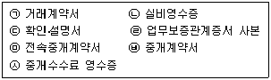
- ㉠, ㉡, ㉢, ㉣
- ㉠, ㉢, ㉣, ㉦
- ㉠, ㉡, ㉢, ㉦
- ㉠, ㉢, ㉣, ㉥, ㉦
- ㉡, ㉢, ㉣, ㉤, ㉦
(정답률: 알수없음)
5. 부동산중개업법령상의 과태료에 관한 설명 중 틀린 것은?
- 중개업자가 폐업신고를 하지 아니하고 폐업하면 100만원이하의 과태료 부과사유가 된다.
- 공인중개사의 자격취소처분을 받은 자가 자격증을 반납하지 않은 경우에는 건설교통부장관이 과태료를 부과ㆍ징수한다.
- 과태료의 금액을 정함에 있어서는 당해 위반행위의 동기도 참작하여야 한다.
- 과태료를 부과하고자 할 때에는 10일이상의 기간을 정하여 처분대상자에게 구술 또는 서면에 의한 의견진술의 기회를 주어야 한다.
- 과태료처분을 받은 자가 이의를 제기한 때에는 처분권자는 지체없이 관할법원에 그 사실을 통보하여야 한다.
(정답률: 알수없음)
6. 부동산중개업법령과 관련한 최근 판례의 내용과 부합하지 않는 것은?
- 부동산을 매수할 자력이 없는 자가 전매차익을 노려 중개의뢰함을 알고도 그 전매를 중개한 경우 결과적으로 전매차익을 올리지 못했다 할지라도 부동산중개업법 소정의 부동산투기를 조장하는 행위에 해당한다.
- 1개의 중개사무소를 개설ㆍ등록한 중개업자가 다른 중개사무소를 두는 경우 그 중개사무소가 건축법상 사무실로 사용하기에 적합한 건물이 아니라고 하더라도 중개업을 영위하는 사무소에 해당하는 한 이중사무소 개설에 해당한다.
- 우연한 기회에 단 1회 건물전세계약의 중개를 하고 수수료를 받은 사실만으로는 알선ㆍ중개를 업으로 한 것이라고 볼 수 없다.
- 중개수수료 약정 중 소정의 한도액을 초과하는 부분은 강행법규에 위반한 것으로서 무효라고 보아야 한다.
- 중개계약에 따른 중개업자의 확인ㆍ설명의무와 손해배상의무는 수수료를 지급한 경우에만 해당하므로 중개의뢰인이 중개업자에게 소정의 수수료를 지급하지 아니하였다면 소멸된다.
(정답률: 알수없음)
7. 중개업자의 손해배상책임에 관한 설명 중 틀린 것은?
- 중개업자가 설정된 보증을 변경하는 경우에는 이미 설정된 보증의 효력이 있는 기간중에 다른 보증을 설정하고 그 증빙서를 갖추어 등록관청에 신고하여야 한다.
- 중개업자는 보증보험금ㆍ공제금 또는 공탁금으로 손해배상을 한 때에는 15일이내에 보증보험 또는 공제에 다시 가입하거나 공탁금 중 부족하게 된 금액을 보전하여야 한다.
- 부동산중개업법에 의하여 손해배상책임을 보장하기 위하여 공탁한 공탁금은 중개업자가 폐업 또는 사망한 날부터 3년 이내에는 이를 회수할 수 없다.
- 지역농업협동조합이 부동산중개업을 하는 때에는 보증금액 2천만원이상의 보증을 설정하여야 한다.
- 법인이 아닌 중개업자가 손해배상책임을 보장하기 위하여 설정하여야 하는 보증설정금액은 5천만원이상이다.
(정답률: 알수없음)
8. 부동산중개업법령에서 정한 기간이 잘못 연결된 것은?
- 중개업자의 업무정지처분 최장기간 - 6월
- 중개대상물의 확인ㆍ설명서 사본 보관 - 3년
- 중개수수료 영수증 사본 보관 - 5년
- 실비 영수증 사본 보관 - 3년
- 행정처분사항이 기재된 행정처분관리대장 비치 - 5년
(정답률: 알수없음)
9. 중개업자가 상가건물임대차계약을 중개하면서 임대인 甲과 임차인 乙에게 설명한 내용 중 옳은 것은?
- 임대차는 그 등기가 없는 경우에도 乙이 건물의 인도와 사업자등록을 신청한 때에는 그 다음날부터 제3자에 대하여 대항력이 생긴다.
- 乙은 소액임차인으로서 대항력만 갖추면 어떠한 경우에도 소액보증금 전부를 최우선적으로 변제받을 수 있다.
- 乙이 소액임차인일 때 임대건물가액의 1/2범위 안에서 보증금중 일정액을 다른 담보물권보다 우선하여 변제 받을 권리가 있다.
- 甲과 乙이 상가건물의 임대차계약기간을 1년 미만으로 정하는 경우에는 甲과 乙 모두 그 기간이 유효함을 주장할 수 없다.
- 상가건물임대차보호법은 일시사용을 위한 임대차임이 명백한 경우에도 적용한다.
(정답률: 알수없음)
10. 부동산중개업법령상 벌칙규정으로 옳은 것은?
- 중개사무소의 개설등록을 하지 아니하고 중개업을 한 자는 1년이하의 징역 또는 1천만원이하의 벌금에 처한다.
- 허위 기타 부정한 방법으로 중개사무소의 개설등록을 한 자는 1년이하의 징역 또는 1천만원이하의 벌금에 처한다.
- 공인중개사자격증을 다른 사람에게 양도ㆍ대여한 자는 3년이하의 징역 또는 2천만원이하의 벌금에 처한다.
- 공인중개사가 아닌 자가 공인중개사 또는 이와 유사한 명칭을 사용한 경우는 3년이하의 징역 또는 2천만원이하의 벌금에 처한다.
- 직무상 알게 된 비밀을 누설한 중개업자는 1년이하의 징역 또는 1천만원이하의 벌금에 처한다.
(정답률: 알수없음)
11. 중개업자의 결격사유에 관한 설명 중 옳은 것으로 묶은 것은?
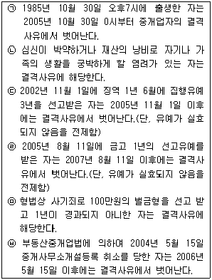
- ㉠, ㉡, ㉢
- ㉠, ㉢, ㉣
- ㉠, ㉢, ㉥
- ㉢, ㉣, ㉤
- ㉠, ㉢, ㉤, ㉥
(정답률: 알수없음)
12. 다음 설명 중 틀린 것은?
- 전속중개계약기간이 끝난 다음날 중개업자가 중개를 완성시켜 거래계약을 체결한 경우 중개업자는 중개의뢰인에 대하여 중개수수료청구권을 갖는다.
- 전속중개계약체결시 표준계약서를 사용하지 아니한 경우, 등록관청은 중개사무소의 개설등록을 취소할 수 있다.
- 중개업자가 부동산거래정보망에 공개된 중개대상물의 거래사실을 거래정보사업자에게 통보하지 아니하여 등록관청으로부터 1월의 업무정지처분을 받았다.
- 자격증 양도를 이유로 2000년 5월 3일 전북도지사로부터 공인중개사자격을 취소당한 자가 2003년 3월 1일 경기도지사로부터 공인중개사자격 취득을 거부당했다.
- 전속중개계약의 유효기간은 3개월이 원칙이므로 3개월이상으로 계약하는 것은 효력이 없다.
(정답률: 알수없음)
13. 중개업자가 공장부지를 중개하면서 설명한 내용 중 틀린 것은?(단, ②의 ‘유치지역’과 ④, ⑤의 ‘공장’은 산업집적활성화 및 공장설립에 관한 법령에 의거함)
- 공장입지 선정시에는 원자재, 제품 등의 운송과 관련한 물류비용을 고려하여야 한다.
- 지방세법상 공장을 증설하기 위하여 유치지역안의 사업용 부동산을 취득하는 경우는 취득세 중과세 대상에서 제외된다.
- 현장조사에서 공장입지와 도로접근성, 용수확보 등을 중시한다.
- 공해발생정도가 높은 공장은 도시형공장으로 지정될 수 있다.
- 아파트형 공장에는 벤처기업을 영위하기 위한 시설이 입주할 수 있다.
(정답률: 알수없음)
14. 중개업의 등록에 관한 설명 중 틀린 것은?
- 업무정지처분을 받은 중개업자는 그 기간 중에 당해 중개업을 폐업하고 다시 중개사무소의 개설등록을 신청할 수 없다.
- 중개사무소의 개설등록을 한 중개업자가 종별을 달리하여 업무를 하고자 하는 경우에는 등록신청서를 다시 제출하여야 한다.
- 등록신청을 받은 등록관청은 10일이내에 중개업자의 종별에 따라 구분하여 등록을 하고, 등록신청인에게 서면으로 통지하여야 한다.
- 등록관청은 중개사무소 등록사항을 부동산중개업협회에 다음달 10일까지 통보하여야 한다.
- 등록관청은 등록증을 교부하는 때에는 손해배상책임을 보장하기 위한 보증의 설정여부를 확인하여야 한다.
(정답률: 알수없음)
15. 중개법인이 부동산 경매에 대하여 설명한 것 중 틀린 것은?
- 미등기 건물도 강제경매의 대상이 될 수 있다.
- 기일입찰에서 매수신청의 보증금액은 매수가격의 10분의 1로 한다.
- 매각부동산 위에 설정된 모든 저당권은 매각으로 소멸된다.
- 지상권ㆍ지역권ㆍ전세권 및 등기된 임차권은 저당권ㆍ압류채권ㆍ가압류채권에 대항할 수 없는 경우에는 매각으로 소멸된다.
- 매수인은 매각대금을 다 낸 때에 매각의 목적인 권리를 취득한다.
(정답률: 알수없음)
16. 중개사무소의 이전 등에 관한 설명 중 틀린 것은?
- 중개업자가 중개사무소를 이전한 때에는 이전전의 중개사무소를 관할하는 등록관청에 신고하여야 한다.
- 이전신고는 이전한 날부터 10일이내에 하여야 한다.
- 등록관청은 분사무소의 이전신고를 받은 때에는 그 분사무소의 소재지를 관할하는 등록관청에 이를 통보하여야 한다.
- 합동사무소에 소속된 중개업자에 대하여는 합동사무소의 대표자가 일괄하여 사무소 이전신고를 할 수 있다.
- 중개사무소의 이전신고를 하고자 하는 자는 신고서에 등록증과 등록된 인장을 첨부하여 제출하면 된다.
(정답률: 알수없음)
17. 중개사무소의 설치에 관한 설명 중 틀린 것은?
- 중개업자는 등록관청의 관할구역안에 중개사무소를 둔다.
- 중개업자는 그 업무의 효율적인 수행과 중개사무소의 공동활용 등을 위하여 필요한 경우 합동사무소를 설치할 수 있다.
- 법인인 중개업자는 등록관청에 신고하고 그 관할구역외의 지역에 분사무소를 둘 수 있으며, 분사무소는 시ㆍ도별로 1개소를 초과할 수 없다.
- 부동산중개업법에 의한 중개법인의 분사무소에는 공인중개사 또는 중개인을 책임자로 두어야 한다.
- 중개법인이 분사무소를 설치하고자 하는 경우에는 주된 사무소 소재지를 관할하는 등록관청에 신고서를 제출하여야 한다.
(정답률: 알수없음)
18. 등록관청이 반드시 중개사무소의 개설등록을 취소하여야 하는 것으로 묶은 것은?
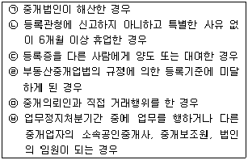
- ㉠, ㉢, ㉥
- ㉠, ㉡, ㉥
- ㉢, ㉣, ㉥
- ㉠, ㉢, ㉤, ㉥
- ㉠, ㉡, ㉢, ㉤
(정답률: 알수없음)
19. 중개업자의 업무의 범위에 관한 설명 중 틀린 것은?
- 중개법인의 분사무소의 업무지역은 전국으로 한다.
- 특수법인은 부동산중개업법상 상세한 규정이 없으므로 전국을 업무지역으로 할 수 없다.
- 중개인의 업무지역은 당해 중개사무소가 소재하는 특별시ㆍ광역시ㆍ도의 관할구역으로 한다.
- 중개인이 부동산중개업법의 규정에 의한 부동산거래정보망에 가입하고 이를 이용하여 중개하는 경우에는 당해 정보망에 공개된 관할구역외의 중개대상물에 대하여도 이를 중개할 수 있다.
- 현행 부동산중개업법령상 중개대상물의 범위는 중개업자의 종별에 따라 차이가 없다.
(정답률: 알수없음)
20. 중개업자가 매매대금 1억 5천만원인 아파트거래계약을 중개하였다. 거래당사자로부터 받을 중개수수료의 총액은?(매매ㆍ교환의 경우 거래가격이 5천만원이상 2억원미만인 경우에는 요율이 1만분의 50이며, 한도액은 80만원이다.)
- 75만원
- 80만원
- 150만원
- 155만원
- 160만원
(정답률: 알수없음)
21. 중개대상물의 확인ㆍ설명에 관한 내용 중 틀린 것은?
- 중개업자가 중개의뢰를 받은 경우에는 거래당사자 쌍방에게 중개업법령이 정하는 사항을 확인하여 서면으로 제시하고 성실ㆍ정확하게 설명하여야 한다.
- 중개업자는 중개대상물의 확인 또는 설명을 위하여 필요한 경우에는 중개대상물의 매도의뢰인, 임대의뢰인 등에게 당해 중개대상물의 상태에 관한 자료를 요구할 수 있다.
- 중개가 완성되어 거래계약서를 작성한 때에는 소정의 확인ㆍ설명사항을 서면으로 작성하여 거래당사자 쌍방에게 이를 교부하여야 한다.
- 중개업자는 거래당사자 쌍방에게 교부하는 중개대상물의 확인설명서에 서명ㆍ날인하여야 한다.
- 중개업자가 확인ㆍ설명하여야 할 사항에는 당해 중개대상물에 관한 권리를 취득함에 따라 부담하여야 할 조세에 관한 개략적인 사항도 포함된다.
(정답률: 알수없음)
22. 중개수수료에 관련된 설명 중 틀린 것은?
- 중개수수료의 청구권은 잔금을 지불할 때 발생된다.
- 중개업자가 중개수수료 요율표를 중개사무소에 게시하지 않은 경우 100만원 이하의 과태료에 처한다.
- 중개업자의 중개수수료는 중개계약에서 유상임을 명시하지 않더라도 중개수수료 청구권은 인정된다.
- 거래계약이 거래당사자의 사정으로 합의해제되거나 채무불이행 등의 이유로 파기된 경우에도 중개업자에게는 여전히 중개수수료 청구권이 존재한다.
- 중개대상물의 소재지와 사무소의 소재지가 다른 경우에는 그 사무소의 소재지를 관할하는 시ㆍ도의 조례로 정한 기준에 따른다.
(정답률: 알수없음)
23. 중개업자 甲이 매도의뢰인인 乙이 현재 혼자 거주하고 있는 단독주택을 丙에게 매도중개하면서 설명한 사항 중 옳은 것은?
- 乙이 ‘나는 이 주택의 진정한 소유자이다’라고 주장하고 이에 대해 그 이웃도 인정하므로 이웃의 확인서를 받아 丙에게 이를 제시하면서 乙이 진정한 소유자라고 설명하였다.
- 등기부를 확인하여 진정한 소유자가 다른 사람이고 乙은 임차인임을 확인한 경우, 丙이 매수하여 권리를 행사함에는 아무런 법적 제한이 없다고 설명하였다.
- 주택의 소유자에게는 민법상 당연히 그 대지사용권이 인정되므로 대지사용권의 유무에 대해서는 걱정할 필요가 없다고 설명하였다.
- 등기부상 乙은 소유자이나 미성년자인 경우, 丁이 그 후견인임을 확인하여 丁과 매매계약을 체결하여도 소유권을 취득하는데 법적인 문제는 없다고 설명하였다.
- 소유자 乙이 의사능력 있는 미성년자이더라도 乙의 친권자인 부모가 위 주택에 대한 乙과 丙의 매매계약에 동의하였다면 그 계약은 유효하다고 설명하였다.
(정답률: 알수없음)
24. 부동산중개업법령상 청문에 관한 설명 중 틀린 것은?
- 시ㆍ도지사도 청문을 실시할 수 있다.
- 중개사무소 개설등록의 취소처분을 하고자 하는 경우에는 청문을 실시하여야 한다.
- 거래정보사업자의 지정취소처분을 하고자 하는 경우에는 청문을 실시하여야 한다.
- 중개업자에 대한 업무정지처분을 하고자 하는 경우에는 청문을 실시하지 아니하여도 된다.
- 공인중개사의 자격취소를 하고자 하는 경우에는 건설교통부장관이 청문을 실시하여야 한다.
(정답률: 알수없음)
25. 부동산중개업법령의 내용 중 옳은 것은?
- 부동산중개업법은 부동산중개업을 건전하게 지도ㆍ육성하고 부동산중개업자의 권익을 보호하여 국민의 재산권보호에 기여함을 목적으로 한다.
- 중개업자가 등록한 인장을 변경한 경우에는 10일이내에 변경된 인장을 등록관청에 등록하여야 한다.
- 중개업자가 사용할 인장등록은 중개업의 개설등록을 하기 전에 하여야 한다.
- 분사무소에서 사용할 인장의 경우 상업등기처리규칙에 따라 법인의 대표자가 보증하는 인장을 등록할 수 있다.
- 공인중개사가 부동산중개업법을 위반하여 벌금형의 선고를 받은 경우에는 그 자격취소사유에 해당한다.
(정답률: 알수없음)
26. 중개법인의 업무범위로 틀린 것은?
- 성남시 소재 상업용 건축물인 10층 빌딩에 대한 관리대행
- 서울시 소재 나대지의 이용과 개발에 관한 상담
- 수원지방법원에서 진행되는 부동산경매에 대한 권리분석 및 취득의 알선
- 주택법상 사업계획승인대상인 주택의 분양대행
- 중개의뢰인의 의뢰에 따른 도배, 이사업체의 소개
(정답률: 알수없음)
27. 중개업자가 토지를 중개하면서 설명한 것 중 틀린 것은?
- 토지의 면적환산식은 제곱미터(m2)÷0.3025=면적(평)이다.
- 토지소유권의 범위는 다른 특별한 사정이 없는 한 현실의 경계와 관계없이 지적공부상의 경계와 면적에 의하여 확정된다.
- 등기부상의 토지소유자와 지적공부상의 토지소유자가 다른 경우에는 등기필증이나 등기부등ㆍ초본 등에 의하여 지적공부가 정리될 수 있다.
- 주말ㆍ체험영농을 하고자 하는 자는 그 세대원 전부가 소유하는 총면적 1,000m2미만의 농지에 한하여 이를 소유할 수 있다.
- 1필지의 토지가 지적법이 정하는 바에 따라 분할의 절차를 밟지 않고 등기부에만 분필의 등기가 이루어졌더라도 분할의 효과가 발생할 수 없다.
(정답률: 알수없음)
28. 중개의뢰접수(listing)에 대한 설명 중 틀린 것은?
- 개업초기의 중개업자는 개업식, 개업축하연 등을 통해 리스팅을 할 수 있다.
- 리스팅의 획득은 일반상품의 구입, 진열과 같은 영업의 출발점이 된다.
- 공가(空家), 공지(空地) 등에 대한 조사를 통하여 리스팅을 할 수 있다.
- 매수의뢰접수에서는 권리의 확인, 중개계약의 유형 확인 등이 필수적이다.
- 순가중개계약은 부동산중개업법상 금지행위에 해당될 수 있다.
(정답률: 알수없음)
29. 분묘가 있는 토지를 중개하면서 설명한 내용 중 틀린 것은?(다툼이 있는 경우 판례에 의함)
- 외형상 분묘의 형태만 갖추었을 뿐 시신이 안장되어 있지 아니한 경우에는 분묘기지권이 생기지 않는다.
- 평장 또는 암장되어 객관적으로 분묘의 존재를 인식할 수 있는 외형을 갖추지 않으면 분묘기지권이 인정되지 않는다.
- 분묘기지권은 분묘의 기지뿐만 아니라 분묘의 수호 및 제사에 필요한 주위의 공지를 포함한 지역에까지 미친다.
- 분묘기지권의 효력이 미치는 지역의 범위내에서 기존의 분묘에 합장하여 단분형태의 분묘를 설치하는 것은 허용된다.
- 분묘기지권은 당사자의 약정 등 특별한 사정이 없으면 권리자가 분묘의 수호를 계속하며 그 분묘가 존속하고 있는 동안 존속한다.
(정답률: 알수없음)
30. 중개업자가 설명한 부동산의 셀링포인트(판매소구점)에 대한 연결로서 가장 옳은 것은?
- 아파트 - 동선, 조망
- 농지 - 주방시설
- 창고시설 - 교육시설
- 단독주택 - 단지규모
- 상업시설 - 동력 및 공업용수
(정답률: 알수없음)
31. 중개업자의 확인ㆍ설명서 작성에 대한 설명 중 옳은 것은?
- ‘대상물건의 표시’란은 등기부등본 및 토지ㆍ건축물관리대장등본을 확인하여 기재한다.
- ‘관리에 관한 사항’란에는 주차장, 판매 및 의료시설을 기재한다.
- 건폐율ㆍ용적률은 기재하지만 도시개발사업, 도시계획시설은 기재하지 않는다.
- ‘환경조건’란에는 승강기, 오ㆍ폐수처리, 배수시설을 기재한다.
- ‘내ㆍ외부시설 및 상태’란에는 벽면상태를 기재한다.
(정답률: 알수없음)
32. 권리제한의 등기가 있는 중개대상물을 조사ㆍ확인하는 과정에 대한 설명 중 틀린 것은?
- 환매등기가 있는 경우 환매등기사실과 환매등기의 위험성을 알려준다.
- 예고등기가 있는 경우 그 부동산에 관하여 등기원인의 무효 또는 취소로 인한 등기의 말소 또는 말소회복의 소송이 제기된 사실을 알려준다.
- 가처분등기가 있는 경우 채권자, 보전되는 권리 등을 알려준다.
- 가등기가 있는 경우 가등기에 기한 본등기 보다 제3자가 소유권이전등기를 먼저 경료하면 가등기는 효력을 상실한다고 알려준다.
- 가압류등기가 있는 경우 채권자, 채권액 등을 알려준다.
(정답률: 알수없음)
33. 중개업자의 업무처리에 관한 설명 중 옳은 것은?
- 중개업자는 중개의뢰인의 요청이 있는 때에는 부동산등기법이 정하는 바에 따라 계약서의 검인을 신청하여야 한다.
- 중개법인에서 소속공인중개사가 거래계약서를 작성한 경우에는 당해 업무를 수행한 공인중개사만 서명ㆍ날인하면 된다.
- 중개업자는 중개가 완성된 때에는 거래계약서를 작성하고 이에 서명ㆍ날인하여야 하며, 3년 동안 그 사본을 보관하여야 한다.
- 중개업자가 거래계약서를 작성할 때에는 건설교통부장관이 정하는 표준서식에 따라야 한다.
- 중개업자는 중개의뢰의 본지에 따라 선량한 관리자의 주의로써 의뢰받은 중개업무를 처리하여야 할 의무를 부담한다.
(정답률: 알수없음)
34. 부동산중개업법령의 내용 중 옳은 것은?
- 중개업자로 등록한 자는 등록한 날로부터 부동산중개업협회의 회원이 된다.
- 부동산중개업협회는 중개업자의 손해배상책임을 보장하기 위하여 공제사업을 하여야 한다.
- 건설교통부장관은 소속공무원으로 하여금 분기별로 중개사무소에 출입하여 부동산투기 등 거래동향의 파악을 위하여 장부ㆍ서류 등을 조사하게 하여야 한다.
- 부동산중개업협회는 공제규정을 변경할 때에도 건설교통부장관의 승인을 얻어야 한다.
- 중개업자가 폐업 후 다시 중개업등록을 하는 경우에는 폐업기간과 관계없이 사전교육이 면제된다.
(정답률: 알수없음)
35. 부동산중개업법령이 규정하고 있는 계약금 등의 반환채무이행의 보장과 관련된 것 중 가장 거리가 먼 것은?
- 금융기관
- 일방대리
- 신탁회사
- 중립적 제3자
- 공제조합
(정답률: 알수없음)
36. 중개계약에 관한 설명 중 옳은 것은?
- 중개계약은 영리를 목적으로 활동하는 중개업자와 중개의뢰인 사이에 체결되는 민사중개계약이므로 일종의 요물계약이다.
- 현행 부동산중개업법상 중개업자는 건설교통부령이 정하는 계약서를 사용하여 일반중개계약을 체결하도록 의무화하고 있으므로 중개계약은 일종의 요식계약이다.
- 판례는 중개업자와 중개의뢰인간의 관계는 민법상 위임관계와 유사하다고 하여 중개계약을 위임계약과 유사한 계약으로 본다.
- 중개업자는 일반중개계약의 의뢰를 받았을 때 중개의뢰내용을 명확하게 하기 위하여 일정한 사항을 기재한 중개계약서를 작성하여야 한다.
- 최근 판례에 따르면 중개수수료는 계약자유의 원칙상 내용결정의 자유에 속하는 사항이므로 중개계약시 중개업자와 의뢰인간의 합의로 법정수수료의 한도를 배제할 수 있다.
(정답률: 알수없음)
37. 부동산중개업법령상 금지행위에 해당하는 것으로 묶은 것은?
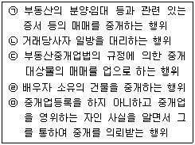
- ㉠, ㉡, ㉣
- ㉠, ㉡, ㉤
- ㉠, ㉢, ㉤
- ㉠, ㉡, ㉢, ㉤
- ㉡, ㉢, ㉣, ㉤
(정답률: 알수없음)
38. 토지이용계획확인서를 통하여 확인할 수 없는 것은?
- 농업진흥구역
- 문화재보호구역
- 토지거래허가구역
- 상수원보호구역
- 소하천구역
(정답률: 알수없음)
39. 중개업자가 주택임대차계약을 중개하면서 설명한 내용 중 틀린 것은?(다툼이 있는 경우 판례에 의함)
- 임차인 본인은 전입신고를 하지 않더라도 처와 자녀만 주민등록 전입신고를 하고 주택을 인도 받으면 대항력을 취득할 수 있다.
- 임차인이 전입신고를 하고 확정일자를 받은 일자와 저당권자의 설정등기일이 같은 경우 임차인이 우선한다.
- 대항요건을 갖추고 확정일자를 받은 임차인이라도 경매절차에서 배당요구의 종기까지 배당요구를 하여야만 배당시 우선변제를 받을 수 있다.
- 보증금의 전부 또는 일부를 월단위의 차임으로 전환하는 경우 월차임은 그 전환되는 금액에 연 1할4푼을 곱한 범위를 초과할 수 없다.
- 주택임대차보호법상 차임 등의 증액청구에 대한 제한규정은 임대차계약이 종료된 후 재계약을 하는 경우에는 적용되지 않는다.
(정답률: 알수없음)
40. 부동산중개업의 휴ㆍ폐업에 관한 설명 중 틀린 것은?
- 중개업자는 3월이상 휴업을 하고자 하는 경우에는 등록관청에 이를 신고하여야 한다.
- 부득이한 사유로 중개업의 휴업기간이 6월을 초과할 경우에는 그 기간이 경과되기 전에 등록관청에 통보하여야 한다.
- 중개업자가 휴업신고를 한 후 재개업을 하고자 하는 경우에는 등록관청에 통보하여야 한다.
- 중개업자가 사망한 때에는 그 중개업자와 세대를 같이 하고 있는 자가 지체없이 등록관청에 폐업신고를 하여야 한다.
- 부득이한 사유로 휴업기간을 연장하고자 하는 자는 휴업기간이 만료되기 7일전까지 등록관청에 통보하여야 하며, 연장기간은 1회에 3월을 초과할 수 없다.
(정답률: 알수없음)
2과목: 임의구분
41. 지적법상 용어의 정의로 틀린 것은?
- “신규등록”이라 함은 임야대장 및 임야도에 등록된 토지를 토지대장 및 지적도에 옮겨 등록하는 것을 말한다.
- “토지의 표시”라 함은 지적공부에 토지의 소재ㆍ지번ㆍ지목ㆍ면적ㆍ경계 또는 좌표를 등록한 것을 말한다.
- “지번부여지역”이라 함은 지번을 부여하는 단위지역으로서 동ㆍ리 또는 이에 준하는 지역을 말한다.
- “면적”이라 함은 지적공부에 등록한 필지의 수평면상 넓이를 말한다.
- “지적측량기준점”이라 함은 지적삼각점ㆍ지적삼각보조점ㆍ지적도근점 및 지적위성기준점을 말한다.
(정답률: 알수없음)
42. 지적법에서 규정하고 있는 지적공부로만 나열된 것은?
- 임야대장ㆍ공유지연명부ㆍ부동산등기부
- 건축물대장ㆍ색인도ㆍ지번도
- 대지권등록부ㆍ토지대장ㆍ행정구역도
- 토지대장ㆍ임야대장ㆍ경계점좌표등록부
- 지적도ㆍ임야도ㆍ일람도
(정답률: 알수없음)
43. 지적측량수행자가 하는 토지의 이동조사 또는 지적측량 시행에 관한 설명 중 틀린 것은?
- 토지의 이동조사 또는 지적측량을 하는 자가 조사ㆍ측량을 위하여 필요한 때에는 타인의 토지를 일시적으로 사용할 수 있다.
- 토지의 이동조사 또는 지적측량을 위하여 필요한 경우에는 죽목이나 그 밖의 장애물을 변경하거나 제거할 수 있다.
- 토지소유자는 조사ㆍ측량을 위하여 토지를 출입하는 것을 거부하거나 방해하지 못한다. 정당한 사유 없이 이를 위반한 경우에는 200만원 이하의 과태료에 처한다.
- 토지의 이동조사 또는 지적측량을 위하여 타인의 토지를 출입하고자 하는 때에는 그 권한을 표시하는 증표를 관계인에게 내보여야 한다.
- 조사ㆍ측량을 위하여 타인의 토지에 출입하고자 하는 때에는 미리 소유자ㆍ점유자 또는 관리인에게 그 뜻을 통지하여야 한다.
(정답률: 알수없음)
44. 부동산을 매매하고자 하는 경우 매수인의 요청에 의하여 매도인이 매매대상 토지에 대한 지적공부상의 경계를 지상(地上)에 확인시켜 주고자 할 경우 의뢰하여야 하는 지적측량은?
- 신규등록측량
- 등록전환측량
- 경계복원측량
- 지적확정측량
- 축척변경측량
(정답률: 알수없음)
45. 다음은 소유자부분을 생략한 토지대장이다. 중개대상물인 이 토지에 대한 공인중개사 甲의 설명 중 틀린 것은?
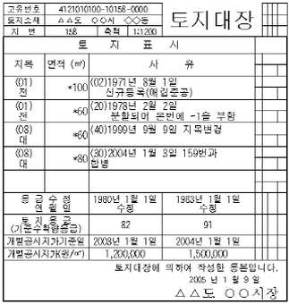
- 158번지 토지는 1971년 8월 1일 토지대장과 지적도에 최초로 등록되었다.
- 1978년 2월 2일 분할된 158-1번지 토지의 최초 면적은 40m2이다.
- 158번지 토지는 1999년 9월 9일 “대”에서 “전”으로 지목이 변경되었다.
- 2004년 1월 3일 합병되어 말소된 159번지 토지의 면적은 20m2이다.
- 158번지 토지는 2004년 1월 3일 159번지와 합병되어 면적이 80m2가 되었다.
(정답률: 알수없음)
46. 지적법상 토지소유자가 하여야 하는 신청을 대위할 수 있는 자가 아닌 것은?
- 공공사업 등으로 인하여 학교용지ㆍ도로ㆍ철도용지ㆍ제방 등의 지목으로 되는 토지의 경우에는 그 사업시행자
- 국가 또는 지방자치단체가 취득하는 토지의 경우에는 그 토지를 관리하는 국가기관 또는 지방자치단체의 장
- 주택법에 의한 공동주택의 부지의 경우에는 집합건물의 소유 및 관리에 관한 법률에 의한 사업시행자
- 민법 제404조(채권자의 대위신청)의 규정에 의한 채권자와 지상권자
- 주택법에 의한 공동주택의 부지의 경우에는 집합건물의 소유 및 관리에 관한 법률에 의한 관리인
(정답률: 알수없음)
47. 행정자치부장관이 지적법에 의하여 지적전산자료ㆍ주민등록전산자료ㆍ공시지가전산자료ㆍ지적위성기준점관측자료 등 토지관련자료의 효율적인 관리 및 활용을 위하여 설치ㆍ운영하는 것은?
- 지역정보센터
- 토지정보센터
- 국토정보센터
- 지적정보센터
- 주민정보센터
(정답률: 알수없음)
48. 토지대장과 임야대장의 등록사항에 관한 설명 중 옳은 것은?
- 토지대장과 임야대장에 등록된 대지권 비율은 집합건물등기부를 정리하는 기준이 된다.
- 토지대장과 임야대장에 등록된 경계는 모든 지적측량의 기준이 된다.
- 토지대장과 임야대장에 등록된 소유자가 변경된 날은 부동산등기부의 등기원인일을 정리하는 기준이 된다.
- 토지대장과 임야대장에 등록된 개별공시지가는 지적공부정리신청수수료의 기준이 된다.
- 토지대장과 임야대장에 등록된 토지의 소재ㆍ지번ㆍ지목ㆍ면적은 부동산등기부의 표제부에 토지의 표시사항을 기재하는 기준이 된다.
(정답률: 알수없음)
49. 지적공부에 등록된 토지소유자의 변경사항은 등기관서에서 등기한 것을 증명하는 등기필통지에 의하여 정리할 수 있다. 이 경우 등기부에 기재된 토지의 표시가 지적공부와 부합하지 않을 때의 설명 중 옳은 것은?
- 지적공부를 등기필통지 내역에 의하여 정리하고, 부합 하지 않는 사실을 관할 등기관서에 통지한다.
- 지적공부를 등기필통지 내역에 의하여 정리할 수 없으며, 그 뜻을 관할 등기관서에 통지한다.
- 지적공부를 등기필통지 내역에 의하여 정리할 수 없으며, 그 뜻을 관할 등기관서에 통지하지 않아도 된다.
- 지적공부를 등기필통지 내역에 의하여 정리만 하면 된다.
- 지적공부를 등기필통지 내역에 의하여 정리하고, 정리한 사항을 관할 등기관서에 통지한다.
(정답률: 알수없음)
50. 지적측량에 관한 설명 중 틀린 것은?
- 지적측량업을 영위하고자 하는 자는 건설교통부장관에게 등록하여야 한다.
- 토지소유자와 이해관계인은 지적측량수행자에게 지적측량을 의뢰할 수 있다.
- 지적측량을 의뢰하는 자는 지적측량수행자에게 지적측량수수료를 지급하여야 한다.
- 지적측량은 소관청 또는 지적측량수행자가 각 필지의 경계 또는 좌표와 면적을 정하는 것을 말한다.
- 지적측량은 토지를 지적공부에 등록하거나 지적공부에 등록된 경계점을 지상에 복원하는 것을 목적으로 한다.
(정답률: 알수없음)
51. 토지이동에 따른 지적공부정리 및 등기촉탁에 관한 설명 중 틀린 것은?
- 소관청은 토지의 이동이 있는 경우에는 토지이동정리결의서를 작성하여야 한다.
- 소관청은 지번을 변경하는 경우 지적공부를 정리하여야 한다. 이 경우 이미 작성된 지적공부에 정리할 수 없는 때에는 지적공부를 새로이 작성하여야 한다.
- 토지표시의 변경에 관한 등기를 할 필요가 있는 경우에는 소관청은 지체 없이 관할 등기관서에 그 등기를 촉탁하여야 한다.
- 소관청 소속공무원이 지적공부와 부동산등기부의 부합여부를 확인하기 위하여 등기부를 열람하거나 등기부등ㆍ초본의 교부를 신청하는 경우 그 수수료는 무료이다.
- 소관청이 지적정리를 한 때에는 그 토지소유자에게 통지하여야 한다. 다만, 통지받는 자의 주소를 알 수 없는 때에는 당해 시ㆍ도의 게시판에 게시하거나 일간신문에 게재하여야 한다.
(정답률: 알수없음)
52. 지적법상의 벌칙규정 중 틀린 것은?
- 신의와 성실로써 공정하게 지적측량을 하여야 하나 이를 위반하여 고의로 지적측량을 잘못한 지적측량수행자에게는 200만원 이하의 과태료에 처한다.
- 지적측량업의 등록을 하지 아니하거나 부정한 방법으로 지적측량업의 등록을 하여 지적측량업을 영위한 자는 5년 이하의 징역 또는 5천만원 이하의 벌금에 처한다.
- 자기ㆍ배우자 또는 직계 존ㆍ비속의 소유토지에 대하여 지적측량을 한 지적측량수행자는 50만원 이하의 과태료에 처한다.
- 행정자치부장관이 감독상 필요한 때 지적측량수행자에게 보고 또는 자료제출을 요구하였으나, 거짓으로 보고 또는 자료제출을 한 자는 200만원 이하의 과태료에 처한다.
- 행정자치부장관이 감독상 필요한 때 소속공무원에게 지적측량수행자의 장부와 서류를 검사하도록 하였으나, 이 검사를 거부ㆍ방해 또는 기피한 자는 200만원 이하의 과태료에 처한다.
(정답률: 알수없음)
53. 경위의측량방법에 의하여 지적확정측량을 시행하는 지역에서 1필지의 면적을 산출한 결과 730.45m2인 경우 지적공부에 등록할 면적으로 옳은 것은?
- 730m2
- 730.4m2
- 730.45m2
- 730.5m2
- 731m2
(정답률: 알수없음)
54. 등기의 효력에 관한 설명 중 틀린 것은?(다툼이 있으면 판례에 의함)
- 등기는 물권의 존속요건이므로 등기가 원인 없이 말소되면 물권은 상실된다.
- 등기가 형식적으로 존재하는 사실 자체로 그 등기에 표시된 실체적 권리관계가 존재하는 것으로 추정된다.
- 말소회복등기는 말소된 종전등기와 동일한 효력을 가진다.
- 등기절차나 과정에 하자가 있으나 그 등기가 실체적 권리관계에 부합하는 한 유효한 등기로 본다.
- 등기에는 추정력이 있으므로 무효를 주장하는 측에서 그 사유를 입증하여야 한다.
(정답률: 알수없음)
55. 토지소유권보존등기 신청서의 첨부서면이 아닌 것은?
- 토지대장등본
- 토지거래허가서(토지거래허가구역인 경우)
- 신청인의 주소를 증명하는 서면
- 위임장(대리인에 의한 등기신청의 경우)
- 신청서부본
(정답률: 알수없음)
56. 등기신청시에 제출하여야 할 서면이 아닌 것은?
- 협의분할에 의한 상속등기신청의 경우 분할협의서에 날인한 상속인 전원의 인감증명
- 등기의 말소를 신청하는 경우 그 말소에 대하여 등기상 이해관계 있는 제3자의 승낙서 등
- 소유권의 보존 또는 이전등기를 신청하는 경우 신청인의 주소를 증명하는 서면
- 농지에 대하여 취득시효완성을 원인으로 한 소유권이전등기를 신청하는 경우 농지취득자격증명
- 건물의 일부에 대한 전세권설정등기를 신청하는 경우 그 건물의 도면
(정답률: 알수없음)
57. 등기절차에 관한 설명 중 옳은 것은?
- 공동상속인 중 일부만의 상속등기도 할 수 있다.
- 건물의 특정된 일부분이 아닌 공유지분에 대한 전세권 설정등기도 할 수 있다.
- 집합건물의 복도, 계단 등 구조상 공용부분에 대하여는 전유부분으로 등기할 수 없다.
- 등기명의인 3인을 2인으로 변경하는 등기명의인표시변경등기도 할 수 있다.
- 토지의 특정된 일부분에 대한 지상권설정등기는 할 수 없다.
(정답률: 알수없음)
58. 등기신청절차에 관한 설명 중 틀린 것은?
- 등기는 원칙적으로 당사자의 신청에 의하여 행해지지만, 예외적으로 등기관의 직권 또는 법원의 명령에 의하여 행해지는 경우가 있다.
- 등기관은 원칙적으로 등기신청서 접수 후 24시간 이내에 등기필증을 교부하여야 한다.
- 등기권리자가 등기를 신청하지 아니하고 방치한 경우 등기의무자는 등기권리자를 상대로 등기인수청구권을 행사할 수 있다.
- 근저당권이전의 부기등기는 주등기인 근저당권설정등기가 말소되는 경우에도 별도의 말소신청에 의하여 말소하여야 한다.
- 등기신청인이 다수일 경우 등기신청서의 간인(間印)은 그 중 1인이 하면 되지만, 정정인(訂正印)은 전원이 날인하여야 한다.
(정답률: 알수없음)
59. 1968.12.31 이전에 등기부에 기재된 등기로서 부동산등기법(1991.12.14법률제4422호) 시행일(1992.2.1)부터 90일 이내에 이해관계인으로부터 권리존속의 신고가 없는 경우 등기관이 직권으로 말소할 수 있는 등기를 모두 고른 것은?
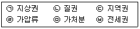
- ㉠, ㉡, ㉣
- ㉡, ㉣, ㉤
- ㉡, ㉤, ㉥
- ㉢, ㉣, ㉤
- ㉠, ㉢, ㉥
(정답률: 알수없음)
60. 가등기에 관한 설명 중 틀린 것은?(다툼이 있으면 판례에 의함)
- 甲의 토지에 소유권이전청구권 보전을 위한 가등기를 한 乙이 가등기상의 권리를 丙에게 양도하면, 丙은 그 권리보전을 위하여 그 가등기상의 권리의 이전등기를 가등기에 대한 부기등기의 형식으로 경료하면 된다.
- 가등기는 가등기만으로써 실체법상의 효력은 없고 순위보전의 효력만 있으나 담보가등기는 일정한 경우 저당권과 같은 실체법상의 효력이 인정된다.
- 소유권보존등기청구권을 보전하기 위한 가등기는 할 수 없다.
- 가등기권리자는 무효인 중복등기에 관하여 말소를 청구할 수 있는 권리가 없다.
- 가등기권리자가 가등기에 기한 본등기를 하면 실체법상의 효력은 가등기한 날로 소급하여 발생한다.
(정답률: 알수없음)
61. 등기의무자의 권리에 관한 등기필증이 멸실된 경우의 등기신청절차에 관한 설명 중 틀린 것은?
- 관할등기소에 소유권등기를 한 성년자 2인 이상의 보증서로 등기필증에 갈음할 수 없다.
- 변호사가 대리인으로서 등기를 신청하는 경우 등기의무자 또는 그 법정대리인으로부터 위임받았음을 확인하는 서면 2통을 제출하면 된다.
- 등기의무자 또는 그 법정대리인이 신청서 중 등기의무자의 작성부분에 확정일자인을 받아 그 부본 1통을 제출하면 된다.
- 등기의무자 또는 그 법정대리인이 직접 등기소에 출석하여 등기신청을 하면 된다.
- 국내부동산을 처분하려는 재외국민이나 외국인의 수임인이 대리신청하는 경우에는 그 처분권한 일체를 위임받은 내용의 위임장에 등기필증 멸실의 뜻을 기재하고 공증을 받아 그 위임장부본 1통을 제출하면 된다.
(정답률: 알수없음)
62. 부동산소유권이전등기에 관한 설명 중 옳은 것은?
- 대지권을 등기한 건물에 관하여 그 건물만의 소유권이전등기도 가능하다.
- 소유권이전등기는 권리변경의 등기로서 기입등기, 주등기, 종국등기에 속한다.
- 1필지 토지의 특정 일부에 대한 소유권이전등기를 하는 경우 그 특정 부분에 대한 분필등기를 거치지 않고 그 부분에 대한 소유권이전등기를 할 수 있다.
- 토지수용으로 인한 소유권이전등기는 반드시 등기의무자와 등기권리자의 공동신청에 의하여야 한다.
- 매매계약 후 소유권이전등기 신청 전에 매도인이 사망한 경우에는 반드시 상속등기를 필한 후에 매수인 앞으로 매매를 원인으로 한 소유권이전등기를 하여야 한다.
(정답률: 알수없음)
63. 말소에 관한 등기절차에 대한 설명 중 옳은 것은?
- 말소등기는 등기사항의 일부가 부적법한 경우에도 할 수 있다.
- 등기관이 등기완료 후 그 등기가 “사건이 등기할 것이 아닌 때”에 해당하는 것임을 발견한 경우에도 이를 직권말소할 수 없다.
- 토지수용으로 인한 소유권이전등기 신청이 있는 경우에 그 부동산을 위하여 존재하는 지역권의 등기는 말소하여야 한다.
- 소유권보존등기가 착오로 경료된 경우 그 등기명의인은 신청착오를 원인으로 하여 그 등기의 말소를 신청할 수 없다.
- 말소등기는 기존의 등기를 법률적인 차원에서 말소시키는 점에서 부동산이 물리적으로 멸실된 경우에 행하는 멸실등기와 구별된다.
(정답률: 알수없음)
64. 구분건물에 관한 설명 중 틀린 것은?
- 구분건물의 등기용지(기록)는 1동 전체를 표시하는 표제부와 개개의 구분건물에 대한 갑구 및 을구로 편성되어 있다.
- 대지권 등기를 하기 전 토지에 설정된 저당권의 실행으로 인한 경매신청등기와 이에 따른 소유권이전등기는 처분의 일체성이 적용되지 않아 허용된다.
- 대지권의 취지로 등기가 된 토지에 대해서는 그 토지만의 저당권을 설정할 수 없다.
- 상가건물도 일정한 요건을 갖춘 경우에는 구분소유의 목적으로 할 수 있다.
- 규약상 공용부분을 등기하는 경우에는 갑구와 을구는 두지 않고 표제부만 둔다.
(정답률: 알수없음)
65. 권리능력없는 사단인 종중의 등기에 관한 설명 중 틀린 것은?
- 종중이 소유한 부동산을 등기하는 경우에는 갑구란에 종중명칭 외 종중대표자의 성명, 주소, 주민등록번호가 함께 기재된다.
- 종중이 등기를 신청할 경우에는 대표자임을 증명하는 서면이 요구된다.
- 종중이 등기를 신청할 경우 정관 기타 규약이 있으면 그 규약을 제출하여야 하지만 정관이나 규약이 없으면 제출하지 않아도 된다.
- 종중총회의 결의서는 종중이 등기의무자인 경우에만 등기신청시 요구된다.
- 종중이 등기의무자인 경우 등기신청에 필요한 인감증명은 대표자의 인감증명을 제출하면 된다.
(정답률: 알수없음)
66. 등기신청의무와 관련한 설명 중 옳은 것은?
- 부동산매매계약을 체결한 경우 매수인은 매매계약일로부터 60일 이내에 등기하지 않으면 과태료의 처분을 받는다.
- 甲이 乙로부터 무상으로 토지를 증여받았다면 증여의 효력이 발생한 날로부터 60일 이내에 등기를 신청하지 않으면 과태료의 처분을 받는다.
- 건물을 신축한 경우 소유자는 준공검사일로부터 60일 이내에 보존등기를 신청하여야 한다.
- 건물대지의 지번의 변경 또는 대지권의 변경이 있는 경우 소유자는 그 변경일로부터 60일 이내에 변경등기를 하지 않으면 과태료의 처분을 받는다.
- 토지의 지목변경이 있는 경우 그 토지 소유명의인은 60일 이내에 표시변경의 등기신청을 하여야 한다.
(정답률: 알수없음)
67. 부동산 관련 상속세 및 증여세에 대한 설명 중 틀린 것은?
- 증여자의 사망으로 인하여 효력이 발생하는 증여는 상속세의 과세대상이다.
- 토지 또는 건물의 실제소유자와 명의자가 다른 경우 그 명의자로 등기 등을 한 날에 그 재산의 가액을 명의자가 실제소유자로부터 증여받은 것으로 본다.
- 국가 또는 지방자치단체가 증여받은 재산의 가액은 증여세를 비과세한다.
- 비거주자의 사망으로 상속이 개시될 경우 국내에 있는 비거주자의 상속재산에 대하여만 상속세를 과세한다.
- 상속세 또는 증여세가 부과되는 재산의 가액은 평가기준일인 상속개시일 또는 증여일 현재의 시가에 의함이 원칙이나, 상속재산의 가액에 가산하는 증여재산의 가액은 증여일 현재의 시가에 의한다.
(정답률: 알수없음)
68. 거주자의 국내소재 부동산 관련 조세에 대한 설명 중 옳은 것은?
- 취득세의 부가세(附加稅)인 농어촌특별세는 지방세이다.
- 종합부동산세는 부부합산과세제도를 채택하고 있다.
- 사업용 건물의 양도시 부가가치세 납세의무자는 양수인이다.
- 양도소득은 다른 소득과 합산하여 종합소득세를 신고ㆍ납부하여야 한다.
- 종합부동산세는 주택에 대한 종합부동산세와 토지에 대한 종합부동산세의 세액을 합한 금액을 그 세액으로 한다.
(정답률: 알수없음)
69. 과세표준과 세액을 과세관청에 신고하는 때 납세의무가 확정되는 세목만으로 묶인 것은?
- 종합부동산세ㆍ상속세ㆍ재산세
- 상속세ㆍ증여세ㆍ재산세
- 양도소득세ㆍ종합부동산세ㆍ부가가치세
- 등록세ㆍ증여세ㆍ양도소득세
- 상속세ㆍ종합부동산세ㆍ부가가치세
(정답률: 알수없음)
70. 국내소재 부동산을 임대하는 경우 부가가치세에 대한 설명 중 틀린 것은?
- 사업자가 대가를 받지 아니하고 타인에게 건물을 임대하는 경우 용역의 공급으로 보지 아니한다.
- 사업을 위한 주거용으로 사용하는 건물과 토지의 임대용역은 면세이다.
- 임대료 외에 임대보증금을 받는 경우 법령규정의 산식에 의하여 계산한 간주임대료도 과세표준에 포함된다.
- 간이과세가 적용되지 아니하는 사업장을 보유하고 있는 사업자가 다른 사업장에서 부동산임대업을 새로이 개시하는 경우 간이과세의 적용이 배제된다.
- 부동산임대업의 사업장은 그 부동산의 등기부상 소재지이나 예외적으로 그 사업에 관한 업무를 총괄하는 장소로 하는 경우도 있다.
(정답률: 알수없음)
71. 소득세법상 거주자의 국내소재 자산에 대한 양도소득세 관련 설명 중 틀린 것은?
- 등기되지 아니한 부동산임차권의 양도는 양도소득세 과세대상에 해당한다.
- 법령의 규정에 의한 농지의 대토로 인하여 발생하는 소득에 대하여는 양도소득세를 비과세한다.
- 예정신고와 함께 자진납부를 하는 때에는 그 산출세액에서 납부할 세액의 100분의 10에 상당하는 금액을 예정신고납부세액공제로 공제한다.
- 대금을 청산한 날이 분명하지 아니한 경우에는 등기부ㆍ등록부 또는 명부 등에 기재된 등기ㆍ등록접수일 또는 명의개서일을 취득시기 또는 양도시기로 한다.
- 양도차익을 계산하는 경우 토지의 기준시가는 관계법령의 규정에 의한 개별공시지가를 원칙으로 한다.
(정답률: 알수없음)
72. 소득세법상 1세대 1주택 양도소득세 비과세에 대한 설명 중 틀린 것은?
- 양도일 현재 서울특별시에 1주택(법령의 규정에 의한 장기저당담보주택 제외)만을 보유하고 있는 1세대로서 당해 주택의 보유기간이 3년 이상이고 그 보유기간 중 거주기간이 1년인 경우 비과세가 적용된다.
- 배우자가 사망하거나 이혼한 경우에는 배우자가 없는 때에도 이를 1세대로 본다.
- 1주택을 보유하는 자가 1주택을 보유하는 자와 혼인함으로써 1세대가 2주택을 보유하게 되는 경우 그 혼인한 날부터 2년 이내에 먼저 양도하는 주택은 이를 1세대 1주택으로 보아 비과세 여부를 판단한다.
- 하나의 건물이 주택과 주택 외의 부분으로 복합되어 있는 겸용주택의 경우 주택의 면적이 주택 외의 면적보다 클 때에는 그 전부를 주택으로 본다.
- 거주 혹은 보유 중에 소실 등으로 인하여 멸실되어 재건축한 주택은 그 멸실된 주택과 재건축한 주택에 대한 기간을 통산하여 거주 또는 보유기간을 계산한다.
(정답률: 알수없음)
73. 소득세법상 거주자인 개인이 국내소재 부동산을 20⑤년 10월 24일 양도한 경우 양도소득과세표준 예정신고기한 및 관할관청으로 올바르게 짝지은 것은?(단, 신고기한이 공휴일이 아니라고 가정함)
- 20⑤년 12월 24일 - 부동산의 등기부상 소재지 관할세무서장
- 20⑤년 12월 31일 - 부동산의 등기부상 소재지 관할세무서장
- 20⑤년 12월 24일 - 양수인의 주소지 관할세무서장
- 20⑤년 12월 31일 - 양도인의 주소지 관할세무서장
- 2006년 5월 31일 - 양수인의 주소지 관할세무서장
(정답률: 알수없음)
74. 지방세법상 취득세의 과세표준에 대한 설명 중 옳은 것은?
- 토지의 시가표준액은 당해 토지의 개별공시지가에 국세청장이 정하는 적용비율을 곱하여 산정한 가액이다.
- 모든 주택의 시가표준액은 건축원가를 참작하여 지방세법에 의하여 지방자치단체의 장이 결정한 가액이다.
- 주택거래신고지역에서 거래가액을 신고한 경우 당해 신고가액이 시가표준액에 미달한 때에도 신고가액을 과세표준으로 한다.
- 취득세의 과세표준은 취득당시의 가액으로 한다. 다만, 연부로 취득하는 경우 연부금액으로 한다.
- 지방자치단체로부터 부동산을 취득하는 경우 시가표준액 이 과세표준이 된다.
(정답률: 알수없음)
75. 아래 자료에 의하여 소득세법상 토지의 양도차익을 기준시가로 계산할 때 옳은 것은?
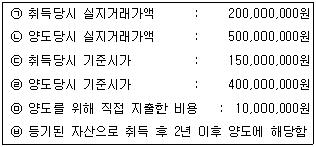
- 240,000,000원
- 244,000,000원
- 245,500,000원
- 290,000,000원
- 294,000,000원
(정답률: 알수없음)
76. 지방세법상 세율에 대한 설명 중 옳은 것은?
- 회원제골프장용 부동산 중 구분등록의 대상이 되는 토지와 건축물에 대한 취득세 세율과 서울특별시 내의 법인 본점 또는 주사무소(신ㆍ증축에 한함)의 사업용 부동산에 대한 취득세 세율은 동일하다.
- 도지사는 조례가 정하는 바에 의하여 취득세 세율(중과세 세율 제외)을 표준세율의 100분의 50의 범위 안에서 가감조정할 수 있다.
- 상속으로 인한 토지(농지가 아님)의 소유권을 취득하는 경우 등록세 세율은 부동산가액의 1,000분의 20이다.
- 매매에 의한 토지(농지가 아님)의 소유권을 취득하는 경우 등록세 세율은 부동산가액의 1,000분의 30이다.
- 동일한 취득물건에 대하여 2 이상의 세율이 해당되는 경우 취득세 세율은 그 중 낮은 세율을 적용한다.
(정답률: 알수없음)
77. 지방세법상 재산세에 대한 설명 중 옳은 것은?
- 재산세의 과세대상인 토지의 정의는 종합부동산세 과세대상 토지의 정의와 다르다.
- 재산세의 과세대상인 주택은 부속토지를 제외한 주거용건축물을 말한다.
- 여객자동차터미널용 토지, 고급오락장용 토지는 재산세 분리과세 대상토지이다.
- 재산세의 납세의무자는 납기개시일 현재 재산세 과세대장에 등재되어 있는 자를 말한다.
- 재산세 과세대상이 공유재산인 경우에는 그 지분에 해당하는 부분에 대하여 그 지분권자를 납세의무자로 본다.
(정답률: 알수없음)
78. 종합부동산세에 대한 설명 중 옳은 것은?
- 종합부동산세의 과세기준일은 지방세법상 재산세의 과세기준일과 동일하다.
- 재산세는 세부담상한제도를 두고 있으나, 종합부동산세는 세부담상한제도를 두고 있지 아니하다.
- 종합부동산세는 물납제도를 두고 있지 아니하다.
- 종합부동산세에 있어서 주택의 범위에는 지방세법상 별장이 포함된다.
- 종합부동산세의 납세지는 부동산 소재지이다.
(정답률: 알수없음)
79. 지방세법상 취득세 비과세 대상이 아닌 것은?
- 상속으로 인한 취득으로서 법령의 규정이 정하는 1가구 1주택(고급주택 제외) 및 그 부속토지의 취득
- 공유권의 분할로 인한 취득
- 이전한 건축물의 가액이 종전 건축물의 가액을 초과하지 아니하는 경우 그 건축물의 이전으로 인한 취득
- 공사현장사무소로서 존속기간이 1년을 초과하지 아니하는 임시용 건축물의 취득
- 사회복지법인이 부동산임대업에 사용하기 위한 별장의 취득
(정답률: 알수없음)
80. 지방세법상 취득세에 대한 설명 중 틀린 것은?
- 취득세를 신고하고자 하는 자는 납세의무자의 주소지를 관할하는 시장ㆍ군수에게 신고하고 납부하여야 한다.
- 국내에 주소를 둔 개인이 매매로 인하여 부동산을 취득한 경우 취득한 날부터 30일 이내에 산출한 세액을 신고하고 납부하여야 한다.
- 취득가액이 50만원 이하인 때에는 취득세를 부과하지 아니한다.
- 취득세 신고기한까지 신고하지 아니한 자는 신고기한만료일부터 30일을 경과하지 아니한 경우로서 당해 취득세를 보통징수의 방법으로 부과고지 받기 전에는 기한후 신고를 할 수 있다.
- 취득세의 과세대상이 되는 토지는 지적법의 규정에 의한 토지를 말한다.
(정답률: 알수없음)
3과목: 임의구분
81. 국토의 계획 및 이용에 관한 법령상 용도지구의 지정목적에 관한 설명 중 틀린 것은?
- 중요시설물보존지구 : 공용시설을 보호하고 공공업무기능을 효율화하기 위하여 필요한 지구
- 리모델링지구 : 노후된 공동주택 등 건축물이 밀집된 지역으로서 새로운 개발보다는 현재의 환경을 유지하면서 이를 정비할 필요가 있는 지구
- 개발진흥지구 : 주거기능ㆍ상업기능ㆍ공업기능ㆍ유통물류기능ㆍ관광기능ㆍ휴양기능 등을 집중적으로 개발ㆍ정비할 필요가 있는 지구
- 문화자원보존지구 : 문화재ㆍ전통사찰 등 역사ㆍ문화적으로 보존가치가 큰 시설 및 지역의 보호와 보존을 위하여 필요한 지구
- 특정용도제한지구 : 주거기능 보호 또는 청소년 보호 등의 목적으로 청소년 유해시설 등 특정시설의 입지를 제한할 필요가 있는 지구
(정답률: 알수없음)
82. 국토의 계획 및 이용에 관한 법령상 광역도시계획에 관한 설명 중 틀린 것은?
- 광역계획권은 건설교통부장관이 지정할 수 있다.
- 광역도시계획을 수립 또는 변경하고자 하는 때에는 미리 공청회를 개최하여야 한다.
- 광역도시계획의 수립은 건설교통부장관 또는 시ㆍ도지사가 한다.
- 광역도시계획을 수립할 때에는 시ㆍ군ㆍ구의회의 의견을 들어야 한다.
- 광역도시계획을 수립한 때에는 공고하여 관계서류를 30일 이상 일반이 열람할 수 있게 하여야 한다.
(정답률: 알수없음)
83. 국토의 계획 및 이용에 관한 법령이 규정하고 있는 기반시설부담구역에 대한 설명으로 옳은 것은?
- 기반시설부담구역은 개발이익이 현저히 발생할 것으로 예상되는 지역으로서 개발밀도관리구역과 중복하여 지정할 수 있다.
- 기반시설부담구역을 지정 또는 변경하고자 하는 때에는 중앙도시계획위원회의 심의를 거쳐 건설교통부장관의 승인을 얻어야 한다.
- 소규모 개발행위가 연접하여 시행될 것으로 예상되는 경우에는 하나의 단위구역으로 묶어서 기반시설부담구역으로 지정할 수 있다.
- 기반시설부담개발행위를 하는 자가 납부한 비용은 당해 도시의 기반시설의 설치나 국민임대주택의 건설에 사용될 수 있다.
- 기반시설부담구역안에서는 그 용도지역에 적용되는 용적률의 최대한도의 50% 범위 안에서 용적률을 강화하여 적용할 수 있다.
(정답률: 알수없음)
84. 국토의 계획 및 이용에 관한 법령상 지구단위계획구역에서 완화할 수 있는 사항이 아닌 것은?
- 건축물의 높이제한
- 대지의 분할제한
- 용도지역안에서의 건폐율
- 용도지역안에서의 용적률
- 부설주차장의 설치기준
(정답률: 알수없음)
85. 국토의 계획 및 이용에 관한 법령에서 정하고 있는 용도지역에 관한 설명 중 옳은 것은?
- 용도지역의 지정 또는 변경은 도시기본계획으로 결정ㆍ고시한다.
- 용도지역은 크게 도시지역, 준도시지역, 농림지역 및 자연환경보전지역으로 구분된다.
- 자연환경보전지역은 자연환경ㆍ수자원ㆍ해안ㆍ생태계ㆍ상수원 및 문화재의 보전과 수산자원의 보호ㆍ육성 등을 위하여 필요한 지역이다.
- 도시지역은 주거지역, 상업지역, 공업지역, 녹지지역 및 보전지역으로 구분된다.
- 주거지역 중 준주거지역은 주택의 층수에 따라 제1종, 제2종 및 제3종으로 세분된다.
(정답률: 알수없음)
86. 국토의 계획 및 이용에 관한 법령상 용도지역 및 용도지구안에서의 건축물의 건축제한 등이 개별법률에 의하여야 하는 경우가 있다. 각 경우와 그 근거법률의 연결이 옳게 된 것은?(문제 오류로 실제 시험장에서는 모두 정답 처리되었습니다. 여기서는 1번을 누르시면 정답 처리 됩니다.)
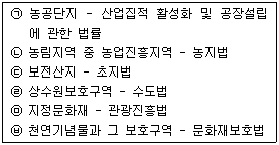
- ㉠, ㉢, ㉤
- ㉠, ㉣, ㉤
- ㉡, ㉢, ㉤
- ㉡, ㉣, ㉥
- ㉢, ㉣, ㉥
(정답률: 알수없음)
87. 국토의 계획 및 이용에 관한 법령상 개발행위허가에 대한 설명 중 틀린 것은?
- 도시계획사업에 의하는 경우라도 일정규모 이상의 건축물을 건축하는 때에는 개발행위허가를 받아야 한다.
- 재해복구 또는 재난수습을 위한 응급조치는 개발행위허가를 받지 아니하고 이를 할 수 있다.
- 경작을 위하여 절토ㆍ성토 등의 방법으로 토지를 형질변경하고자 하는 경우에는 개발행위허가를 받지 아니한다.
- 개발행위허가권자는 대통령령이 정하는 바에 따라 당해 개발행위에 따른 기반시설의 설치를 조건으로 개발행위허가를 할 수 있다.
- 개발행위허가권자는 개발행위허가를 받지 아니하고 개발행위를 하거나 허가내용과 다르게 개발행위를 하는 자에 대하여는 그 토지의 원상회복을 명할 수 있다.
(정답률: 알수없음)
88. 1필지의 면적이 500m2인 토지에 건축물을 건축하고자 하는 경우 국토의 계획 및 이용에 관한 법령상 지상에 건축할 수 있는 건물의 최대 연면적은(주차장 면적은 제외함)? (다만, 당해 토지의 40%는 제1종전용주거지역, 60%는 자연녹지지역에 걸쳐 있으며, 조례상 제1종전용주거지역의 용적률은 80%이하, 자연녹지지역의 용적률은 50%이하이다. 그 외의 조건은 고려하지 아니한다)
- 150m2
- 160m2
- 250m2
- 310m2
- 400m2
(정답률: 알수없음)
89. 국토의 계획 및 이용에 관한 법령상 도시계획시설에 대한 설명 중 틀린 것은?(문제 오류로 실제 시험장에서는 1, 4번이 정답 처리되었습니다. 여기서는 1번을 누르시면 정답 처리 됩니다.)
- 도시지역에서 설치하고자 하는 기반시설로서 도시공원법의 규정에 의하여 점용허가대상이 되는 공원안의 기반시설은 도시관리계획으로 결정하지 아니한다.
- 공동구가 설치된 경우에는 당해 공동구에 수용되어야 할 시설이 빠짐없이 공동구에 수용되도록 하여야 한다.
- 관계 특별시장ㆍ광역시장ㆍ시장 또는 군수는 협약을 체결하거나 협의회 등을 구성하여 광역시설을 설치ㆍ관리할 수 있다.
- 도시계획시설결정이 고시된 도시계획시설에 대하여 그 고시일부터 20년이 경과될 때까지 사업이 시행되지 아니하는 경우 그 고시일부터 20년이 되는 날에 그 효력을 상실한다.
- 도시계획시설은 교통시설, 공간시설 등 기반시설 중 도시관리계획으로 결정된 시설을 말한다.
(정답률: 알수없음)
90. 국토의 계획 및 이용에 관한 법령상 토지거래계약에 관한 허가구역(이하 “허가구역”이라 함)에 대한 설명 중 틀린 것은?
- 건설교통부장관은 지가가 급격히 상승할 우려가 있는 지역으로서 투기우려가 있다고 인정되는 지역에 대하여 5년 이내의 기간을 정하여 허가구역으로 지정할 수 있다.
- 건설교통부장관은 지정기간이 만료되는 허가구역을 계속하여 다시 허가구역으로 지정하고자 하는 때에는 중앙도시계획위원회의 심의전에 미리 시ㆍ도지사 및 시장ㆍ군수 또는 구청장의 의견을 들어야 한다.
- 허가구역 지정의 효력은 허가구역의 지정을 공고한 날부터 5일후에 발생한다.
- 건설교통부장관은 허가구역의 지정사유가 없어졌다고 인정되는 경우 중앙도시계획위원회의 심의를 거치지 않고 해제할 수 있다.
- 허가구역의 해제 또는 축소의 경우에 지체없이 이를 7일 이상 공고하고, 그 공고내용을 15일간 일반이 열람할 수 있도록 하여야 한다.
(정답률: 알수없음)
91. 국토의 계획 및 이용에 관한 법령상 제2종지구단위계획에 포함되어야 할 사항으로 규정되어 있지 않은 것은?
- 도시의 공간구조
- 기반시설의 배치와 규모
- 교통처리계획
- 건축물의 용도제한
- 건축물의 건폐율 또는 용적률
(정답률: 알수없음)
92. 국토의 계획 및 이용에 관한 법령상 토지거래계약에 관한 허가구역안에서 토지거래계약에 관한 허가를 받아야 하는 경우는?
- 민사집행법에 의한 경매의 경우
- 국유재산법에 의한 국유재산관리계획에 따라 국유재산을 일반경쟁입찰에 의하여 처분하는 경우
- 도시개발법에 의하여 환지예정지로 지정하는 경우
- 농어촌정비법에 의하여 농지 등을 교환하는 경우
- 민법에 의하여 부동산을 교환하는 경우
(정답률: 알수없음)
93. 국토의 계획 및 이용에 관한 법령에서 정한 용도지역별 건폐율의 최대한도가 높은 지역부터 낮은 지역 순으로 나열한 것은?
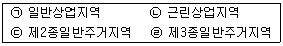
- ㉠-㉡-㉢-㉣
- ㉠-㉡-㉣-㉢
- ㉡-㉠-㉢-㉣
- ㉢-㉣-㉠-㉡
- ㉣-㉢-㉡-㉠
(정답률: 알수없음)
94. 국토의 계획 및 이용에 관한 법령에 근거하여 이루어지는 것은?
- 투기과열지구의 지정
- 시범도시의 지정
- 수변구역의 관리
- 도시개발사업의 시행방식
- 도시ㆍ주거환경기본계획의 수립
(정답률: 알수없음)
95. 개발제한구역의 지정 및 관리에 관한 특별조치법령에 관한 설명 중 틀린 것은?
- 개발제한구역의 지정 및 관리에 관한 구 도시계획법 제21조에 대한 헌법재판소의 헌법불합치결정을 배경으로 제정되었다.
- 개발제한구역의 지정으로 인하여 종래의 용도로 사용할 수 없어 그 효용이 현저히 감소된 토지를 개발제한구역 지정당시부터 계속 소유한 자는 건설교통부장관에게 당해 토지의 매수를 청구할 수 있다.
- 개발제한구역으로 지정된 부동산에 대하여 그 소유자로 하여금 환지 또는 대토청구권을 행사할 수 있도록 규정하고 있다.
- 건설교통부장관은 개발제한구역의 지정목적을 달성하기 위하여 필요한 경우에는 소유자와 협의하여 개발제한구역안의 토지 및 그 토지의 정착물을 매수할 수 있다.
- 개발제한구역안에서 허가를 요하는 행위를 허가받지 아니하고 행한 자에 대하여 3년 이하의 징역 또는 3천만원 이하의 벌금에 처한다.
(정답률: 알수없음)
96. 개발제한구역의 지정 및 관리에 관한 특별조치법령상 개발제한구역에서 시장ㆍ군수 또는 구청장의 허가를 받아 할 수 있는 시설이 아닌 것은?
- 체육시설의 설치ㆍ이용에 관한 법령에 의한 골프장
- 도시계획시설로서의 주차장
- 민간이 설치하는 청소년수련시설
- 국가 또는 지방자치단체가 설치하는 공동묘지 및 화장장
- 증축으로서 주택을 용도변경한 근린생활시설
(정답률: 알수없음)
97. 도시개발법령상 도시개발사업의 시행과 관련된 설명 중 틀린 것은?
- 지정권자는 도시개발구역의 전부를 환지방식으로 시행하는 경우에는 도시개발구역안의 토지소유자 또는 이들이 도시개발을 위하여 설립한 조합을 시행자로 지정한다.
- 시행자인 지방공사는 도시개발사업에 필요한 토지등을 수용 또는 사용하는 경우 토지소유자의 일정비율의 동의를 얻어야 한다.
- 시행자인 국가 또는 지방자치단체는 토지소유자가 원하는 경우에는 토지등의 매수대금의 일부를 지급하기 위하여 토지상환채권을 발행할 수 있다.
- 시행자(지정권자가 시행자인 경우 제외)는 토지상환채권을 발행하고자 하는 때에는 토지상환채권의 발행계획을 작성하여 미리 지정권자의 승인을 얻어야 한다.
- 시행자는 도시개발사업의 전부 또는 일부를 환지방식에 의하여 시행하고자 하는 경우에는 환지계획을 작성하여야 한다.
(정답률: 알수없음)
98. 도시개발법령상 도시개발사업의 시행방식과 관련된 설명 중 옳은 것은 모두 몇 개인가?
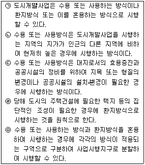
- 1개
- 2개
- 3개
- 4개
- 5개
(정답률: 알수없음)
99. 도시개발법령상 도시개발사업에 있어서 환지계획과 관련된 설명 중 틀린 것은?
- 행정청이 아닌 시행자가 환지계획을 작성하는 때에는 시장ㆍ군수 또는 구청장의 사전검토를 받아야 한다.
- 시행자는 토지면적의 규모를 조정할 특별한 필요가 있는 때에는 과소토지가 되지 아니하도록 면적을 증가하여 환지를 정하거나 환지대상에서 제외할 수 있다.
- 토지소유자의 신청 또는 동의가 있는 때에는 당해 토지의 전부 또는 일부에 대하여 환지를 정하지 아니할 수 있다. 다만, 당해 토지에 관하여 임차권자등이 있는 때에는 그 동의를 얻어야 한다.
- 시행자는 도시개발사업의 원활한 시행을 위하여 특히 필요한 때에는 토지소유자의 동의를 얻어 입체환지를 할 수 있다.
- 시행자는 도시개발사업에 필요한 경비에 충당하기 위하여 일정한 토지를 체비지 또는 보류지로 정할 수 있다.
(정답률: 알수없음)
100. 도시개발법령상 도시개발구역 또는 도시 및 주거환경정비법령상 정비구역으로 지정ㆍ고시된 경우 당해 구역이 제1종지구단위계획구역으로 결정ㆍ고시된 것으로 보지 않는 구역은?
- 취락지구로 지정된 지역에서의 도시개발구역
- 자연녹지지역에서의 도시개발구역
- 상업지역에서의 도시개발구역
- 도시환경정비사업 정비구역
- 주택재개발사업 정비구역
(정답률: 알수없음)
101. 도시개발법령상 도시개발사업을 위한 조합과 도시 및 주거환경정비법령상 정비사업을 위한 조합에 공통으로 적용되는 설명 중 옳은 것은?
- 조합설립의 인가 신청을 위해 토지소유자 총수의 3분의 2 이상의 동의를 얻어야 한다.
- 조합은 법인으로 하며, 그 주된 사무소의 소재지에서 등기함으로써 성립한다.
- 조합을 설립하고자 하는 때에는 구역안의 토지소유자 5인 이상이 정관을 작성하여 조합설립의 인가를 받아야 한다.
- 조합을 설립하기 위해서는 조합원 3분의 2 이상이 동의하는 추진위원회를 구성하여야 한다.
- 조합임원은 총회에서 조합원 3분의 2 이상 출석과 출석 조합원 과반수의 동의를 얻어 선임한다.
(정답률: 알수없음)
102. 도시 및 주거환경정비법령상 정비사업 시행에 관한 설명 중 틀린 것은?
- 주택재건축사업은 조합이 조합원 과반수의 동의를 얻어 시장ㆍ군수 또는 주택공사 등과 공동으로 이를 시행할 수 있다.
- 시장ㆍ군수는 조합이 계속 추진하기 어려워 정비사업의 목적을 달성할 수 없다고 인정하는 때에는 당해 조합을 대신하여 직접 정비사업을 시행할 수 있다.
- 시장ㆍ군수가 직접 정비사업을 시행하는 때에는 정비구역의 위치 및 면적 등과 같이 토지등소유자에게 알릴 필요가 있는 사항은 당해 지방자치단체의 공보에 고시하여야 한다.
- 주거환경개선사업은 토지등소유자 과반수의 동의를 얻어 시장ㆍ군수가 직접 시행할 수 있다.
- 주택재건축사업조합은 사업시행인가를 받은 후 시공자를 선정하여야 한다.
(정답률: 알수없음)
103. 도시 및 주거환경정비법령상 정비사업을 시행하는 절차를 시행순서에 따라 나열한 것은?
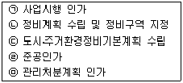
- ㉠-㉢-㉡-㉤-㉣
- ㉡-㉢-㉠-㉤-㉣
- ㉢-㉡-㉤-㉠-㉣
- ㉢-㉡-㉠-㉤-㉣
- ㉢-㉠-㉤-㉡-㉣
(정답률: 알수없음)
104. 도시 및 주거환경정비법령상 주택재건축사업의 안전진단에 대한 설명 중 옳은 것은?
- 주택재건축사업을 위한 안전진단은 공동주택 및 단독주택 모두를 대상으로 한다.
- 천재ㆍ지변 등으로 주택이 붕괴되어 신속히 재건축을 추진할 필요가 있다고 시장ㆍ군수가 인정하는 경우 안전진단 대상에서 제외한다.
- 시장ㆍ군수에게 안전진단을 신청한 자는 안전진단의 실시가 결정된 때에 안전진단에 필요한 비용을 시장ㆍ군수가 지정하는 안전진단전문기관에 납부하여야 한다.
- 시장ㆍ군수는 안전진단 신청이 있으면 30일 이내 안전진단을 실시하여야 한다.
- 정비구역내 도로 등 기반시설 설치를 위한 토지위의 건축물은 안전진단 대상이다.
(정답률: 알수없음)
1⑤. 도시 및 주거환경정비법령상 정비사업에 있어 관리처분계획에 관한 설명 중 옳은 것은?
- 사업시행자는 토지등소유자가 분양신청을 하지 아니한 경우에 토지ㆍ건축물 또는 그 밖의 권리에 대하여 경매 처분한다.
- 사업시행자는 기존 건축물을 철거한 후에 관리처분계획을 수립하여 인가를 받아야 한다.
- 관리처분계획에는 정비사업비의 추산액 및 그에 따른 조합원 부담규모 및 부담시기가 포함된다.
- 투기과열지구밖에서 시행되는 주택재건축사업의 토지등소유자에게는 1세대가 1 이상의 주택을 소유한 경우에 1주택을 공급한다.
- 주택재개발사업의 토지등소유자에게는 보유한 주택수 만큼 공급할 수 있다.
(정답률: 알수없음)
106. 도시 및 주거환경정비법령상 주택재개발사업에서 사업시행계획서에 포함되어야 할 사항으로 규정되어 있지 않은 것은?
- 기존주택의 철거계획
- 건축물 배치계획
- 임대주택 건설계획
- 건축물의 높이 및 용적률
- 정비사업 시행과정에서 발생하는 폐기물 처리계획
(정답률: 알수없음)
107. 주택법령상 사업주체가 공공택지안에서 건설ㆍ공급하는 주거전용면적 85m2 이하인 공동주택에 대하여는 건설교통부령에 따라 산정된 분양가격 이하로 공급하여야 한다. 이에 해당하는 공공택지가 아닌 것은?
- 국민주택건설을 위한 대지조성사업에 의해 개발ㆍ조성되는 공동주택건설용지
- 택지개발사업에 의해 개발ㆍ조성되는 공동주택건설용지
- 산업단지개발사업에 의해 개발ㆍ조성되는 공동주택건설용지
- 국민임대주택단지조성사업에 의해 개발ㆍ조성되는 공동주택건설용지
- 도시개발조합이 시행하는 도시개발사업에 의해 개발ㆍ조성되는 공동주택건설용지
(정답률: 알수없음)
108. 주택법령상 사업주체의 담보책임 및 하자보수 등에 관한 설명 중 틀린 것은?
- 사업주체는 공동주택의 사용검사일(주택단지 안의 공동주택의 전부에 대하여 임시사용승인을 얻은 경우에는 그 임시사용승인일) 또는 사용승인일부터 10년 이내의 범위에서 대통령령이 정하는 바에 따라 하자를 보수하여야 한다.
- 사업주체가 지방자치단체인 경우에는 주택법상의 하자 보수보증금 예치의무가 없다.
- 시장ㆍ군수ㆍ구청장은 주택법령상의 하자담보책임기간 이내에 공동주택의 구조안전에 중대한 하자가 있다고 인정하는 경우에는 안전진단기관에 의뢰하여 안전진단을 실시할 수 있다.
- 사업주체는 주택법령상의 하자담보책임기간안에 공동주택의 내력구조부에 중대한 하자가 발생한 때에는 손해배상책임이 있다.
- 건축법에 의해 건축허가를 받아 분양목적으로 공동주택을 건축한 건축주는 주택법령상의 하자담보책임을 지지 아니한다.
(정답률: 알수없음)
109. 주택법령상의 주택거래신고에 대한 설명 중 틀린 것은?
- 주택거래신고지역안에서의 주택거래신고는 주택거래계약의 체결일부터 30일 이내에 당해 주택소재지의 관할 시장ㆍ군수ㆍ구청장에게 신고하여야 한다.
- 주택거래신고지역으로 지정되기 이전에 체결한 계약중 부동산등기특별조치법상 검인을 받지 아니한 계약도 신고하여야 한다.
- 신고인이 신고필증을 교부받은 때에는 부동산등기특별조치법상 검인을 받은 것으로 본다.
- 건설교통부장관은 주택거래신고지역의 지정 후 지정사유가 해소된 것으로 인정되는 경우 주택정책심의위원회의 심의를 거쳐 주택거래신고지역의 지정을 해제하여야 한다.
- 주택거래신고지역에서 주택거래를 신고하지 아니한 자에 대하여 당해 주택에 대한 취득세(비과세ㆍ면제ㆍ감경되는 경우에는 비과세ㆍ면제ㆍ감경되지 아니하는 경우에 납부하여야 할 취득세액 상당액)의 5배 이하에 상당하는 금액의 과태료에 처한다.
(정답률: 알수없음)
110. 주택법령상 사업주체의 주택건설용 토지의 취득에 관한 내용 중 틀린 것은?
- 국가 또는 지방자치단체는 그가 소유하는 토지를 매각하거나 임대함에 있어서 국민주택규모의 주택을 50% 이상으로 건설하는 자에게 우선적으로 당해 토지를 매각하거나 임대할 수 있다.
- 사업주체가 국민주택용지로 사용하기 위하여 체비지의 매각을 요구한 때에는 도시개발사업시행자는 체비지 총면적의 2분의 1의 범위안에서 이를 우선적으로 사업주체에게 매각할 수 있다.
- 위 ②의 체비지 양도가격은 원칙적으로 조성원가를 기준으로 하되, 예외적으로 감정평가업자의 감정가격으로 한다.
- 지방공사인 사업주체가 국민주택을 건설하기 위한 대지를 조성하는 경우에는 토지 등을 수용 또는 사용할 수 있다.
- 국가인 사업주체는 주택건설사업을 위한 토지매수업무와 손실보상업무를 관할 지방자치단체의 장에게 위탁할 수 있다.
(정답률: 알수없음)
111. 건축법령상 이행강제금에 관한 설명 중 틀린 것은?
- 이행강제금에 대하여 이의를 제기하지 아니하고, 이를 납부하지 않은 경우에는 국세 또는 지방세체납처분의 예에 의하여 징수한다.
- 이행강제금부과처분에 관한 재판은 비송사건절차법에 의한 과태료의 재판에 의한다.
- 연면적 85m2 이하의 주거용 건축물인 경우에는 법정이행강제금의 2분의 1의 범위안에서 당해 지방자치단체의 조례로 정하는 금액을 부과한다.
- 허가대상 건축물을 허가받지 아니하고 건축하여 벌금이 부과된 자에게는 이행강제금을 부과할 수 없다.
- 시정명령을 받은 자가 그 시정명령을 이행한 경우에도 이미 부과된 이행강제금을 납부하여야 한다.
(정답률: 알수없음)
112. 건축법령상 시장ㆍ군수ㆍ구청장이 등기촉탁할 수 있는 경우로서 틀린 것은?
- 사용승인을 얻은 건축물로서 신규등록하는 경우
- 지번의 변경이 있는 경우
- 건축물의 멸실후 멸실신고한 경우
- 건축물의 철거신고에 의하여 철거한 경우
- 행정구역의 명칭에 변경이 있는 경우
(정답률: 알수없음)
113. 건축법령상 건축물을 신축할 때 지진에 대한 안전여부를 확인하여야 하는 기준으로 규정되어 있는 것은?
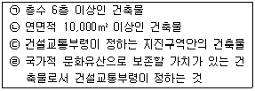
- ㉠, ㉡
- ㉢, ㉣
- ㉡, ㉢
- ㉡, ㉣
- ㉠, ㉣
(정답률: 알수없음)
114. 건축법령상 건축분쟁조정에 관한 설명 중 옳은 것은?
- 건축물의 건축등과 관련한 분쟁의 조정을 원하는 자는 허가권자가 시ㆍ도지사인 경우 건설교통부에 설치된 중앙분쟁조정위원회에 분쟁의 조정을 신청할 수 있다.
- 건축법은 건축분쟁당사자간의 합의에 의해 그 소요된 비용을 부담하는 것에 대해서는 규정하고 있지 않다.
- 건축분쟁조정위원회는 조정신청을 받은 날부터 15일 이내에 이를 심사하여 조정안을 작성하여야 한다.
- 건축분쟁조정위원회는 건축분쟁조정에 필요한 경우 법원의 영장을 받아 그 위원 등으로 하여금 관계 사업장에 출입하여 조사하게 할 수 있다.
- 관계전문기술자 상호간의 분쟁은 건축분쟁조정위원회의 조정대상이 된다.
(정답률: 알수없음)
115. 건축법령상 다음과 같은 조건의 건축물의 용적률은 얼마인가?
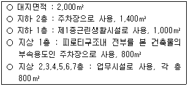
- 240%
- 280%
- 290%
- 330%
- 400%
(정답률: 알수없음)
116. 건축법령상 증축ㆍ개축 또는 재축에 해당하지 아니하는 것으로서 대수선행위로 볼 수 없는 것은 ?
- 내력벽의 벽면적을 30m2 이상 해체하여 변경하는 행위
- 건축물의 전면부 창문틀을 해체하여 변경하는 행위
- 미관지구안에서 건축물의 담장을 변경하는 행위
- 건축물의 방화구획을 위한 바닥 또는 벽을 해체하여 수선하는 행위
- 다세대주택의 세대간 주요구조부인 경계벽을 수선하는 행위
(정답률: 알수없음)
117. 농지법령상 농지전용에 관련된 설명 중 틀린 것은?
- 다른 법률에 의해 농지전용의 허가가 의제되는 협의를 거친 경우는 전용허가를 받은 것으로 본다.
- 농지를 전용하고자 하는 자는 원칙적으로 당해 농지의 소재지를 관할하는 농지관리위원회의 확인을 거쳐 농림부장관의 허가를 받아야 한다.
- 농지를 농업인 주택부지로 전용하고자 하는 자는 당해 농지의 소재지를 관할하는 농지관리위원회의 확인을 거쳐 시장ㆍ군수 또는 자치구구청장에게 신고하여야 한다.
- 도시지역안에 있는 농지로서 주무부장관 또는 지방자치단체의 장이 농림부장관과 미리 전용협의를 거친 농지나 협의대상에서 제외되는 농지는 전용허가 없이 전용할 수 있다.
- 농지를 간이농업용시설의 용도로 일시 사용하고자 하는 자는 시장ㆍ군수 또는 자치구구청장의 허가를 받아야 하며, 농지조성비를 농지관리기금 운용ㆍ관리자에게 납부하여야 한다.
(정답률: 알수없음)
118. 농지법령상 농지취득자격증명을 발급받지 않고 농지를 취득할 수 있는 경우로 틀린 것은?
- 농업기반공사가 농지를 취득하여 소유하는 경우
- 농업법인의 합병으로 농지를 취득하는 경우
- 농림부령이 정하는 농업연구기관이 그 목적사업을 수행하기 위하여 필요로 하는 시험ㆍ연구ㆍ실습지로 농지를 취득하여 소유하는 경우
- 상속에 의하여 농지를 취득하여 소유하는 경우
- 시효의 완성에 의하여 농지를 취득하는 경우
(정답률: 알수없음)
119. 산지관리법상 보전산지 중 공익용 산지(산지전용 제한지역을 제외)안에서 산지전용을 할 수 없는 것은? (다만, 개별법률에 의한 행위제한을 적용하는 경우는 제외한다)
- 연면적 기준으로 종전규모의 100분의 130 이하의 종교시설의 증축
- 장사 등에 관한 법률의 규정에 의하여 허가를 받거나 신고를 한 묘지ㆍ화장장ㆍ납골시설의 설치
- 수목원ㆍ자연휴양림 그 밖에 대통령령이 정하는 산림공익시설의 설치
- 광업법에 의한 광물의 탐사ㆍ시추시설의 설치
- 사방시설ㆍ하천ㆍ제방 그 밖에 이에 준하는 국토보전시설의 설치
(정답률: 알수없음)
120. 산림법령상 영림계획 및 시업에 대한 설명으로 옳은 것은?
- 영림계획의 인가를 받은 산림소유자는 영림계획에 따라 시업을 하고자 할 때에는 시장ㆍ군수 또는 지방산림청장의 허가를 받아야 한다.
- 임업후계자 또는 독림가가 소유하고 있지 아니한 사유림의 영림계획은 산림소유자가 작성하여야 한다.
- 국유림에 대해 시장ㆍ군수는 산림의 보호ㆍ육성을 위하여 필요하다고 인정하는 경우 산림소유자의 신청을 받아 영림계획을 인가할 수 있다.
- 시장ㆍ군수는 영림계획의 인가를 받은 산림소유자의 사망으로 인하여 조림ㆍ육림ㆍ벌채 등의 실적이 50% 미만인 경우 그 인가를 취소할 수 있다.
- 시장ㆍ군수는 영림계획의 인가를 받지 아니한 산림소유자가 시업을 소홀히 하거나 하지 아니한 경우 대통령령이 정하는 바에 따라서 시업을 대행하게 하거나 직접 시업을 할 수 있다.
(정답률: 알수없음)